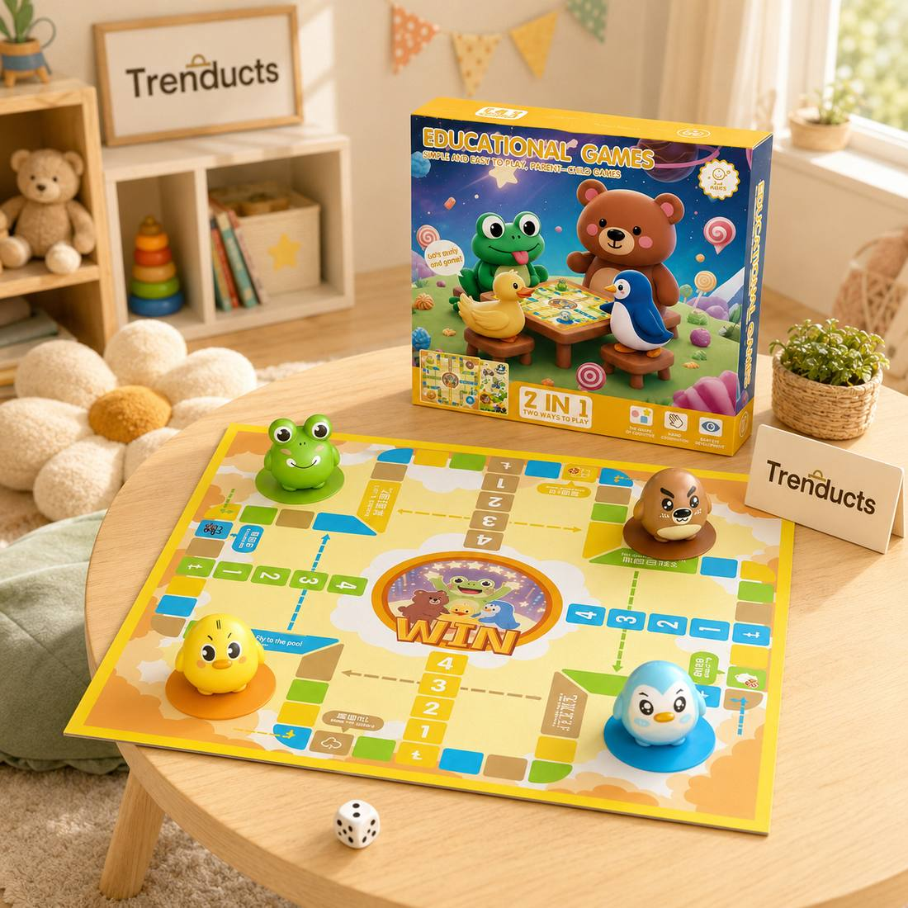
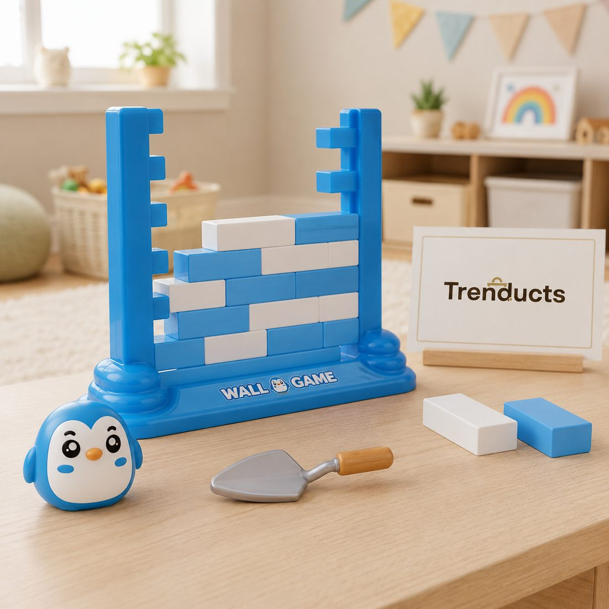

In many homes, the evening looks similar: the father on his phone, the mother catching up on a drama, teenagers in their rooms and the youngest watching cartoons on a tablet. Everyone is home, yet everyone is apart. A weekly family game night is a simple way to change that, at least for one evening.
It does not need planning or expense. A few games, some snacks and a rule that phones go into a basket are enough to start.
Pick a regular night
Consistency matters. Choose an evening when most of the family is free, perhaps Friday or Saturday night when there is no school the next morning. Treat it like an appointment. Once it becomes routine, children start looking forward to it and remind the adults.
The phone basket
The single most important rule is that phones go into a basket for the duration of the game. Adults included. Children notice when parents ask them to put screens away while still scrolling themselves. Agree on a time, such as an hour, so nobody feels cut off indefinitely.
Classic games that never get old
Pakistani families already know some great games:

- Ludo: easy to learn, suits ages from about five upward, and creates plenty of friendly rivalry.
- Carrom: a favourite for generations, with real skill involved.
- Cards: games like Rung or simple matching games for younger children.
- Antakshari: a singing game that needs no equipment and gets grandparents involved.
- Dumb charades: wonderful for mixed ages and big families.
Modern board games
New games add variety. Strategy games with magnetic pieces or dots challenge older children and adults. Balance and stacking games, like ice-breaking or tower games, are simple, fast and full of laughter, perfect for younger children. Educational board games that combine Ludo with learning suit early school ages.
Include every age
Mixed ages can be tricky. Some ideas:
- Pair a younger child with an adult as a team.
- Alternate between a simple game for the little ones and a harder one for older children.
- Let the youngest roll the dice or keep score.
- Choose games with luck as well as skill, so everyone has a chance to win.
Snacks and atmosphere
Snacks make it feel special. Popcorn, chips, pakoras in winter or fruit chaat in summer, plus chai or cold drinks, are easy options. Dim the main lights and use a lamp, or sit together on the floor on a rug with cushions for a cosy feel.

Handling competitive moods
Some children, and adults, find losing hard. Set the tone: celebrate good moves, not just winning. Rotate who chooses the game. If someone is upset, take a break with snacks and try a cooperative game where everyone plays together against the game.
Include grandparents
Grandparents often have games from their own childhood to teach, like gutte or simple word games. Ask them to share. It connects generations and gives children a sense of family history.
Game night during load-shedding
Power cuts are an unexpected opportunity. When the lights and Wi-Fi go, bring out a rechargeable lantern and a board game. Ludo, cards and carrom need no electricity, and many families find their best game nights are the ones that happened by accident in the dark. Keeping a couple of games near your emergency light means the evening turns into fun rather than frustration.
Let children take turns hosting
Give each child a turn to be the host for the night. The host chooses the game, decides the snack and explains the rules. It builds confidence and makes children feel ownership of the tradition.
Building your game shelf
Start with two or three games and add one every month or two. Keep them on an accessible shelf, so children can choose. The toys and games range at Trenducts.pk includes Ludo boards, strategy games and balance games, delivered across Pakistan.
Memories that last
Years from now, your children are unlikely to remember a particular cartoon episode. They are much more likely to remember the night their father lost at Ludo three times or their grandmother won at carrom. Those are the memories game night creates.